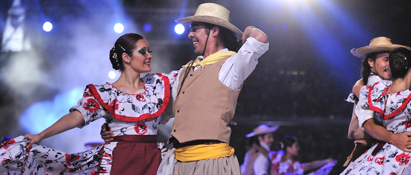
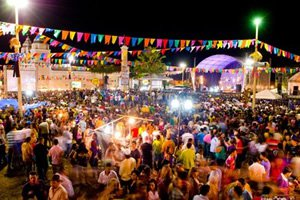
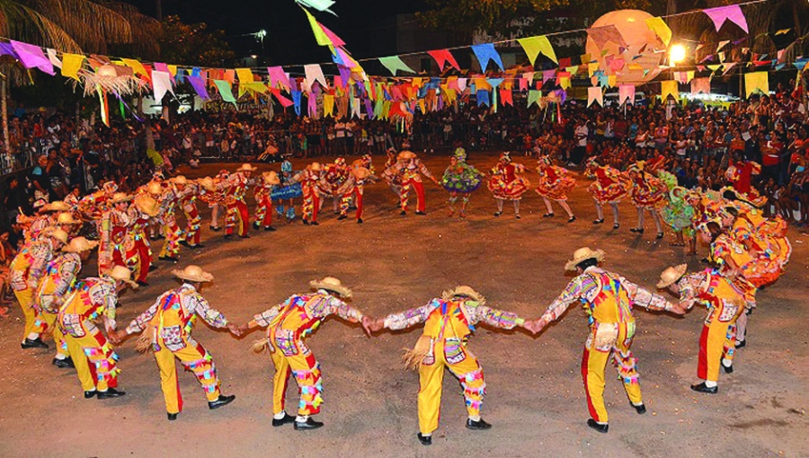
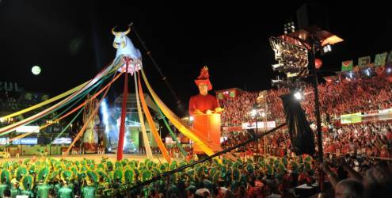
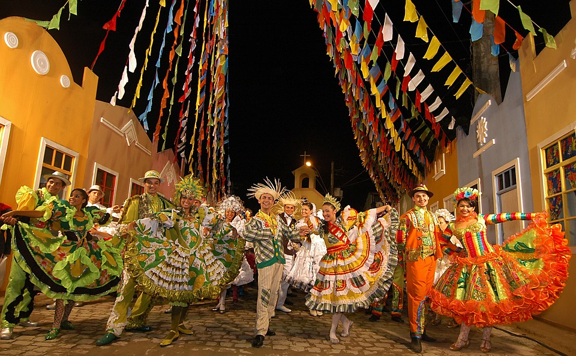

São muitas as diferentes formas de danças juninas, em cada região do Brasil existem danças e comemorações específicas. Confira:
Sul
Festas juninas naesta região são consideradas as mais diferentes, tanto pelas roupas utilizadas, quanto pelas danças como o vaneirão, o chamamé, xote gaúcho, a dança das fitas e o fandango.
Sudeste
Nesta região ocorrem as chamadas quermesses, festas realizadas por igrejas, geralmente, e além da comida, é dançado quadrilha.
Cento Oeste
Nesta região as festas possuem carcterísticas do Paraguai, devido à fronteira com tal país. As danças presentes são quadrilhas, o cururu, Polca Paraguaia e o sertanejo é um estilo musical muito presnete lá.
Norte
A região Norte possui apresentações juninas junto com apresentações de lendas amazônicas e do famoso Boi-Bumbá, além da quadrilha e da dança regional, Carimbó.
Nordeste
Com certeza esta é a região onde as comemorações juninas são mais presentes, com concursos de quadrilhas em muitas cidades e muitas outras danças também, como xote, forró, xaxado e baião.
